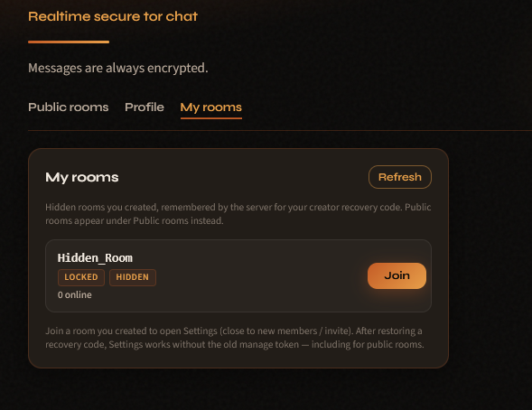
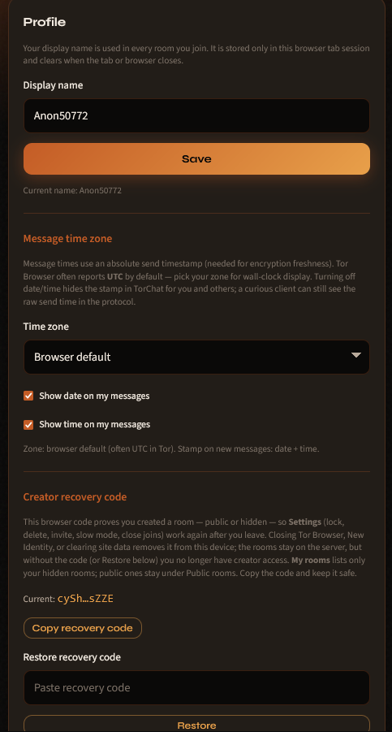
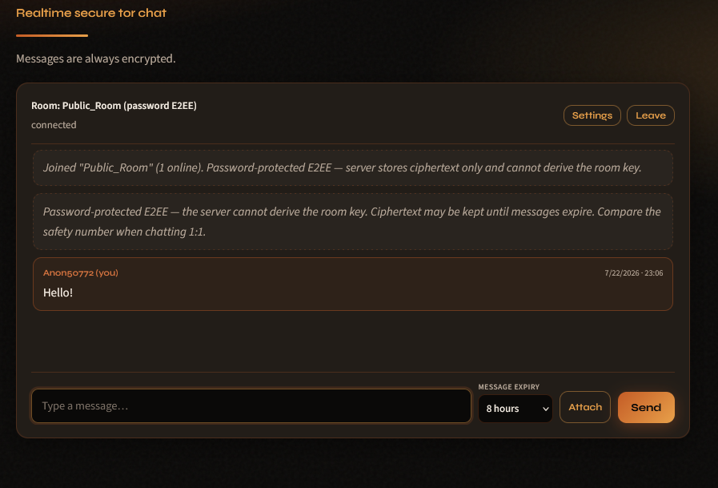
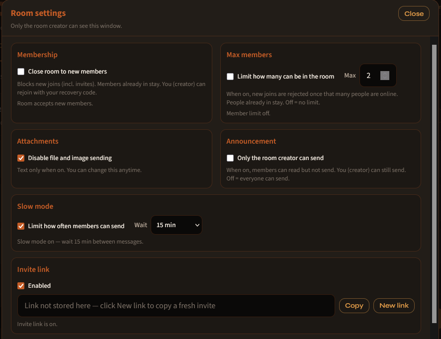
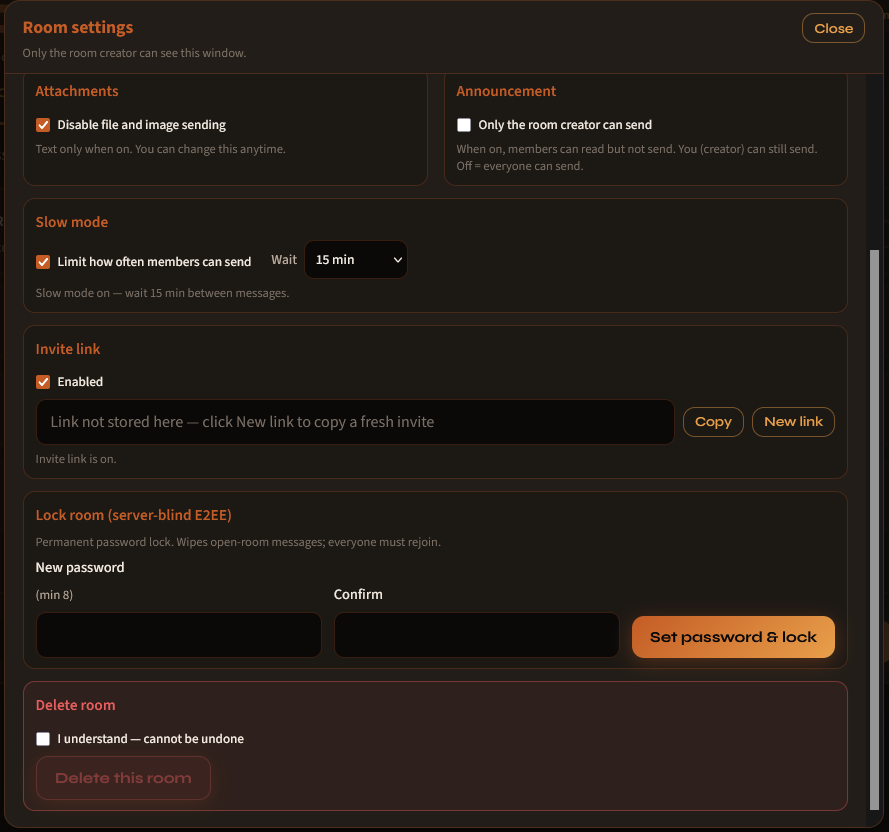

Without Vanguards
Risky over timeNew random hops every circuit. A network watcher maps who you keep talking to, and slowly narrows your real IP.
Self-hosted E2EE chat over Tor Hidden Service
Browse screenshots with the arrows or by swiping






Setting up your own self-hosted chat on the Tor network has never been this easy. Guests open your .onion link in Tor Browser — no port forwarding, no cloud account, and no complicated setup. OffCode Tor Chat is designed to make secure Tor Hidden Service hosting simple.
Messages are encrypted in-browser with WebCrypto AES-256-GCM (PBKDF2-v2, 600k iterations) before reaching the server — ChatServer relays and stores ciphertext only. Password rooms use separate KDF domains so the host cannot derive the key; open rooms are public encrypted channels.
Host with Server Manager on Windows, or headless Docker (ChatServer + Tor HS). Password rooms are server-blind E2EE (the host cannot derive the room key). Open rooms still encrypt in the browser, but the key is derived from the room id: intentional public channels. Hidden rooms stay off the public list and use invite links; add a password for private E2EE. Creators get Settings for close joins, slow mode, lock later, and delete room, plus a Profile recovery code (My rooms for hidden). Required message TTL, E2EE attachments, and optional Full Vanguards complete the stack.
Browser encrypts first: password rooms stay server-blind; open rooms are public by design
ChatServer binds 127.0.0.1 only. Tor Expert Bundle publishes a v3
.onion and forwards VirtualPort 80 (and the app port) to localhost; no
clearnet chat listener. Optional Docker compose: ChatServer + Tor (no host ports).
HiddenServiceVersion 3, ClientOnly 1, SafeLogging 1SOCKSPort 0)http://ADDRESS.onion/.onion / localhostWebCrypto PBKDF2-HMAC-SHA256 (600 000 iterations) → AES-256-GCM. Separate v2 KDF domains for join proof vs room key on locked rooms so the server cannot derive the message key from join material.
roomId|senderId|nonce|clientSentAtUnixMstorchat-open-material-v2:{roomId} — public by design250000:salt:hash (250k PBKDF2)Open, password-protected, and/or hidden rooms with invite links and required per-message lifetime.
?invite= (+ password if locked)SendEncrypted pathsenderId per room; server binds send identity to the sessionOnly the room creator sees Settings (manage token and/or Profile recovery code).
SQLCipher database under LocalAppData (Windows) or Docker volume. DPAPI / env key. Parameterized queries. Plaintext is never written to disk.
encryption_version: pbkdf2-v2 / ecdh-hybrid-v1)secure_delete + WAL checkpoint / VACUUMserver_metaCopper/Forge web UI designed for onion use: no third-party CDNs, self-hosted fonts, SRI on scripts.
script-src / connect-src 'self')TORCHAT_ALLOWED_ONION + live admin POST)tools/verify-sri.ps1 checks index.html hashes vs wwwroot JSlocalStorage (not an E2EE secret)textContent / createElementWindows host console for your Tor chat stack
Server Manager is the host-side control panel: it starts and stops ChatServer
plus a Tor v3 Hidden Service, shows the .onion URL to share, optionally enables
Full Vanguards, and lets you administer rooms and storage. The host never receives plaintext from
clients; password-room keys stay in browsers. Open-room keys are derivable from the room id by design.


/api/health), then enable Tor.onion URLTORCHAT_ALLOWED_ONION on start + live
POST /api/admin/cors-onion (no ChatServer restart)secure_delete + VACUUMdb.key.dpapi; optional checkbox also wipes Tor Hidden Service keys
(.onion identity).onion (chat DB unchanged)Defence-in-depth for a Tor Hidden Service chat, every layer is independently hardened
| # | Protection |
|---|---|
| 1 | Security headers: CSP (default-src 'self',
connect-src 'self'), X-Frame-Options DENY, nosniff,
Referrer-Policy no-referrer, Permissions-Policy, COOP, CORP |
| 2 | Cache-Control: no-store for HTML and
/js/* (sensitive chat shell) |
| 3 | Kestrel / SignalR hardening: AddServerHeader = false,
max body / receive ˜ 4 MiB (E2EE image envelopes);
ClientTimeoutInterval 5 min |
| 4 | Rate limiting: Global HTTP ceiling (~600/min); hub negotiate and
/api/* per connection; Create / Join / Send / GetRooms / GetMyRooms
/ invite-manage hub limits (ConnectionId — Tor has no useful client IP) |
| 5 | CORS: loopback always; mutable onion allowlist
(TORCHAT_ALLOWED_ONION + live
POST /api/admin/cors-onion). Empty allowlist = any
*.onion until locked. No AllowCredentials |
| 6 | AllowedHosts: 127.0.0.1;localhost;*.onion |
| Component | Implementation |
|---|---|
| Network exposure | ChatServer listens on 127.0.0.1 only; Tor HS forwards
.onion → loopback |
| Ciphertext relay | Never receives plaintext; stores ciphertext + metadata. Locked rooms: host cannot derive the key. Open rooms: key = f(room id) |
| At-rest encryption | SQLCipher DB; 32-byte key in DPAPI-protected db.key.dpapi |
| Join proofs | Locked rooms store PBKDF2-HMAC-SHA256 hash of join proof
(250 000 iterations, 32-byte salt) as
250000:salt:hash — not the password and not the E2EE key;
constant-time verify |
| Replay protection | ReplayCache: SHA-256 of
roomId|nonce|payloadB64|clientSentAtUnixMs (+ AES-GCM AAD with
the same timestamp); rejects duplicates, >120 s age, >60 s
future skew, and post-restart gap packets |
| Membership bind | Unique senderId (32 hex) per room on Join; SendEncrypted forces
room / sender id / display name from presence; client claims ignored |
| Hidden + invite | Hidden rooms require a valid enabled invite token on Join; rotate/disable from creator Settings |
| Close room | Creator can reject all new JoinRoom attempts (including invites);
existing members stay. Not the same as server-blind E2EE |
| Slow mode | Optional per-room send cooldown (1 min … 4 h); applies to every
senderId including the creator; text + attachments |
| Lock later / Delete | Creator can set a one-way password on an open room (wipes open history) or
delete the room (same wipe as admin DELETE /api/rooms/{id}) |
| Creator recovery | Profile recovery code binds rooms you create; My rooms
lists hidden via GetMyRooms; Copy / Restore after clear site data.
Settings visible only to the creator |
| Secure erasure | PRAGMA secure_delete + reclaim on expiry/room wipe; Manager
CSPRNG-overwrites DB/key (optional HS keys). SSD wear-leveling: absolute
forensic wipe not guaranteed |
| Join error oracle | Generic Cannot join room., no wrong-password vs missing-room
distinction to clients |
| Create-room oracle | CreateRoom may return Room already exists.; only join errors are fully generic |
| Admin APIs | GET /api/rooms, DELETE /api/rooms/{id}, and
POST /api/admin/cors-onion require
X-TorChat-Admin (CSPRNG token from Server Manager env).
Tor clients cannot call these |
| SQL injection | Parameterized queries only |
| Logging | No passwords, join proofs, plaintext, or ciphertext logged |
| Component | Implementation |
|---|---|
| Encryption | WebCrypto AES-256-GCM; PBKDF2-v2 domains at 600 000
iterations (torchat-join-v2 / torchat-e2ee-v2 locked =
server-blind; torchat-open-v2 open = public key material).
Envelopes: pbkdf2-v2 / ecdh-hybrid-v1 |
| ECDH + safety number | 1:1 hybrid ECDH; safety number from sorted SPKI pubs (3×5 decimal); Mark verified / TOFU change warning (sessionStorage) |
| Subresource Integrity | integrity= on SignalR + app scripts (first-party only);
operator check: tools/verify-sri.ps1 |
| Clearnet warning | Soft banner if the page host is not .onion /
127.0.0.1 / localhost (does not block chat) |
| XSS hardening | No user innerHTML; messages and room ids via
textContent / createElement |
| ForceLeave | Host-deleted rooms kick clients back to lobby over SignalR |
| Browser storage | No IndexedDB / WebRTC for chat keys; creator manage tokens may use localStorage; safety TOFU uses sessionStorage |
| No third-party scripts | Self-hosted fonts and SignalR, nothing loaded from CDNs on the chat app |
A standard Tor Hidden Service chooses its entry (guard) nodes randomly on every circuit build. Over time a network-level adversary can watch which relays the server connects to and gradually narrow down the real server IP. This is called a guard-discovery attack and is especially dangerous for long-lived hidden services.
By pinning layers, only a tiny controlled set of relays ever see the hidden service's circuit-building traffic, making large-scale guard-discovery statistically infeasible.
| Component | How TorChat uses it |
|---|---|
| Activation | Optional: enable the Vanguard checkbox in Server Manager. Disabled by default; hidden service works normally without it. |
| torrc change | Adds ControlPort 127.0.0.1:27551 and CookieAuthentication 1. Without the checkbox the torrc is minimal and no ControlPort is opened. |
| Python addon | Server Manager launches vanguards.py (mikeperry-tor/vanguards) after Tor bootstraps. Requires Python 3.10+ and stem library. |
| Bandguards | Intentionally disabled in shipped vanguards.conf
(enable_bandguards = False). Bandwidth-based circuit-killing
would disconnect active chat sessions; L2/L3 pinning defence remains fully active. |
| ControlPort security | Loopback-only (127.0.0.1:27551), cookie authentication. Cookie file stays on disk under %AppData%\TorChat_ServerManager\TorData\. |
| Soft-fail design | If Python or stem is missing, the checkbox is silently ignored and the hidden service continues normally. Server Manager log shows the exact reason. |
⚠ Vanguards adds latency (~200-500 ms per circuit) due to longer paths. This is a deliberate privacy/performance tradeoff. It does not replace E2EE and does not hide the server from its own guard nodes; it only limits which relays can observe circuit-building over time.
Private messaging when big platforms can scan by default
Use OffCode Tor Chat when you do not want to trust a big-tech messenger that may voluntarily scan private messages under EU Chat Control 1.0. You self-host on a Tor Hidden Service; password rooms keep message keys in the browser so conversations never sit in plaintext on a centralized scanned platform.
In July 2026 the EU effectively kept Chat Control 1.0 in force: a temporary regime that again lets major messaging and mail providers run voluntary, suspicionless scanning for CSAM detection, typically until April 2028, or until a permanent "Chat Control 2.0" framework is agreed. That debate is still open; the lasting fight is whether scanning stays limited to cloud platforms or reaches further into encrypted apps.
OffCode Tor Chat is built for a different threat model: you are not handing your conversations to a centralized messenger whose operator can scan content on its own infrastructure. You run the stack yourself on Tor.
.onion; the chat HTTP stack
does not bind clearnet (optional Docker compose without host ports)This is about architecture and privacy defaults, self-hosting on Tor instead of relying on scanned platform messengers. It is not legal advice, and it does not claim immunity from law or excuse illegal use.
Simple and transparent access to the system
Free self-hosted Tor chat — prebuilt binaries, no cloud account needed.
Includes future updates. Self-hosted — you control the stack.
Free — Instant Access & Self-Hosted
Windows Server Manager or Docker + Tor HS
Full C# & WebCrypto source code access for developers.
Complete system source
Instant access — download right after payment
Personal Developer License
Build upon the source
OffCode Tor Chat is a self-hosted Tor-only realtime chat. Guests open your
.onion in Tor Browser; messages are encrypted in the browser with
WebCrypto AES-GCM. ChatServer relays and stores ciphertext. Password rooms are
server-blind E2EE; open rooms are intentional public channels.
Yes. Server Manager on Windows starts ChatServer (wait for health) then a Tor v3 Hidden Service. Optional Full Vanguards hardens long-lived onions. Headless Docker compose (ChatServer + Tor, no host ports) is also supported. There is no OffCode-hosted chat cloud; you control the onion URL and the stack.
Clients encrypt with WebCrypto (PBKDF2-HMAC-SHA256 at 600 000
iterations, then AES-256-GCM) before sending.
Locked rooms: join proof and room key use separate v2 KDF domains
(torchat-join-v2 / torchat-e2ee-v2) so the server cannot
derive the message key; the password never leaves the browser. The server stores a
second PBKDF2 hash of the join proof (250 000 iters,
iter:salt:hash).
Open rooms: still encrypted (pbkdf2-v2), but the key is
derived from the room id — anyone who knows the id (including the host) can decrypt.
1:1: ECDH hybrid plus a safety number for out-of-band peer verify.
No. Open rooms are public encrypted channels. Use a password (and optionally a hidden room with an invite link) when you need server-blind E2EE.
Chat Control 1.0 lets major messaging providers voluntarily scan private communications. Tor Chat is a different model: self-hosted on Tor, not a centralized big-tech messenger. You avoid that scanned platform path by hosting your own Hidden Service with browser E2EE. This is architectural privacy, not legal advice.
Yes. Guests open http://ADDRESS.onion/ in Tor Browser. The chat HTTP
stack binds loopback only; Tor publishes the Hidden Service. The UI is Tor
Browser-friendly: self-hosted fonts, SRI scripts, and no third-party CDNs.
Yes. Server Manager can remove a room in realtime (lobby kick +
secure_delete/VACUUM for that room’s ciphertext).
Remove SQL data overwrites then deletes the SQLCipher DB and
db.key.dpapi (optional: also wipe Tor HS keys / .onion).
Generate new address securely rotates the Hidden Service identity.
Tor clients cannot call the admin delete API.
Only the room creator sees Settings. Close room to new members rejects all new joins (including invites); people already in stay. Slow mode sets a send cooldown for everyone including the creator. Lock later sets a one-way password on an open room (wipes open history). Delete this room wipes the room like Server Manager delete. The creator recovery code on Profile binds rooms you create; My rooms lists hidden ones — Copy / Restore after Tor New Identity.
If Tor Chat is not working, confirm Server Manager has started ChatServer and Tor,
that the published .onion URL is copied correctly, and that guests use
Tor Browser (not a normal browser). A Tor error or “Tor not working” on the client
usually means Tor Browser cannot reach the network. Restart Tor Browser, wait for a
circuit, then reopen http://ADDRESS.onion/.
Yes — the prebuilt binary release is free (self-hosted, Windows Server Manager or Docker). No port forwarding needed: Tor Hidden Service handles inbound connections via rendezvous; the host only needs outbound Tor access. Works behind NAT, CGNAT, and firewalls.
Ensure the Hidden Service is running in Server Manager, copy the full
.onion link again, and open it only in Tor Browser. If the page fails
to load, wait for Tor to bootstrap, try a new circuit, and verify the host PC is
online with ChatServer still running.